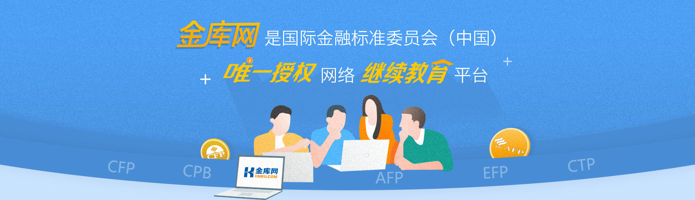

首页
移动端
官方微信：jinkuwang2014
帮助中心
免费注册
登录

如何进行继续教育学习？
1
您需要至少拥有以下证书
AFP、CFP、CPB、EFP、CTP
之一
2
在金库网完成过您的证件信息补全
马上填写
3
您通过金库网有两种方式完成继续教育学习
在线学习
金库网会根据您本报告期所需的学分数，为您快速推荐相应学时的课程，您也可以前往培训商城自由选课。
线下活动
您可以参加标委会授权的继续教育机构，在不同城市举办的免费现场继续教育活动。
其它方式请
点击此处查看
4
在
学习中心
点击对应课程学习 即可自动完成向标委会的学分申报
5
前往标委会
完成后续再认证流程
继续教育小贴士
Tips1:
继续教育需修满30学分，其中仅首次进行继续教育时有必修要求，必修不得低于4学分。
Tips2:
同时持有AFP和CFP证书，仅需对CFP证书进行继续教育。
Tips3:
部分课程不支持CTP证书继续教育。
Tips4:
点击“学习中心”的课程即开始学习，可自动申报学分。未学习的课程，右上角有 “未申报”提示。
Tips5:
每报告期需30学分，如连续修两个报告期的学分，请先修第一个报告期的30学分（超出30学分部分，只能计算在本报告期学分总额内，无法申报至下一报告期）
Tips6:
金库网学分申报后需要登录标委会系统，继续完成认证流程，可登陆标委会官网查看具体流程图
http://pro.fpsbchina.cn/renzheng/707.html
Tips7:
CFP®系列资格认证持证人再认证和资格证书失效与恢复办法，详情请见：
http://pro.fpsbchina.cn/renzheng/709.html
Tips8:
学分无法正常申报，请确认个人信息是否真实完整，且与标委会注册的证件信息保持一致